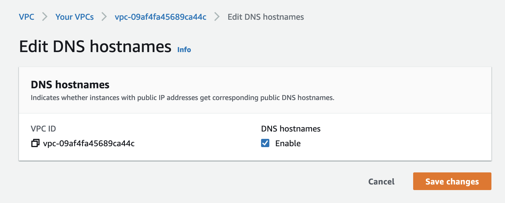
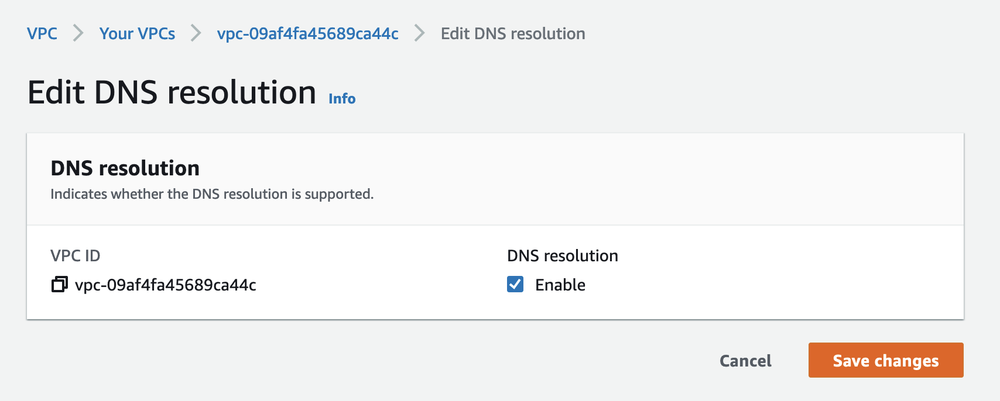
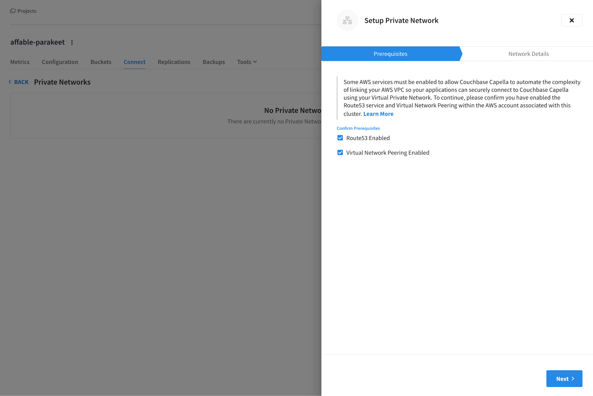
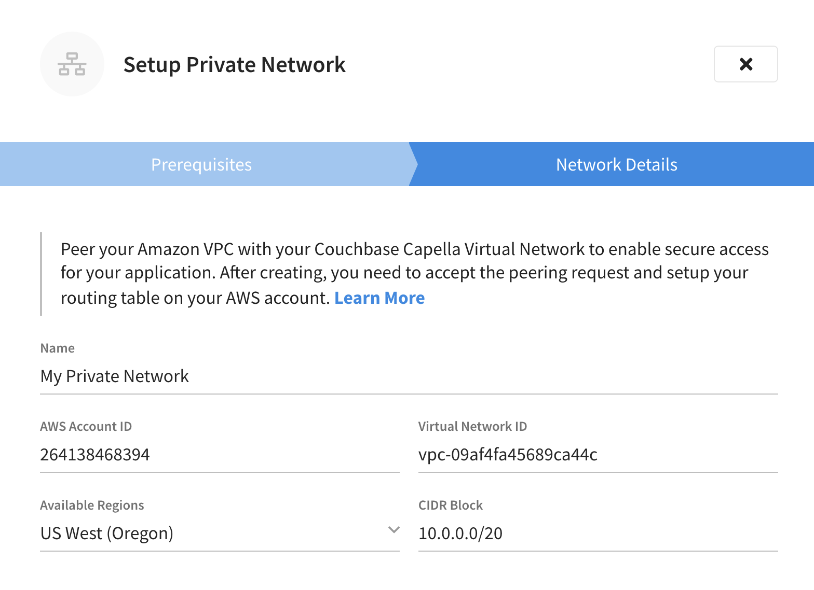
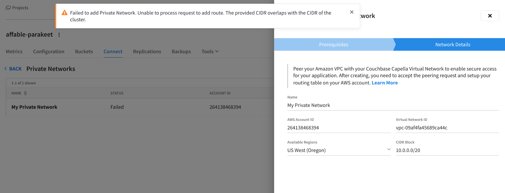
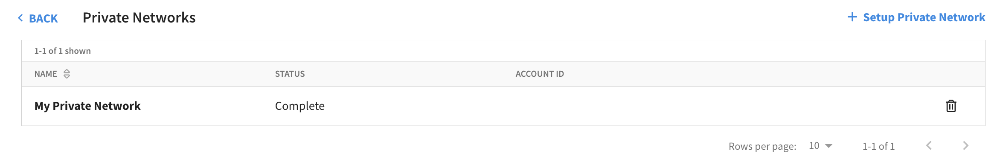
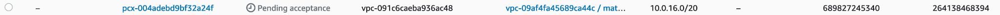
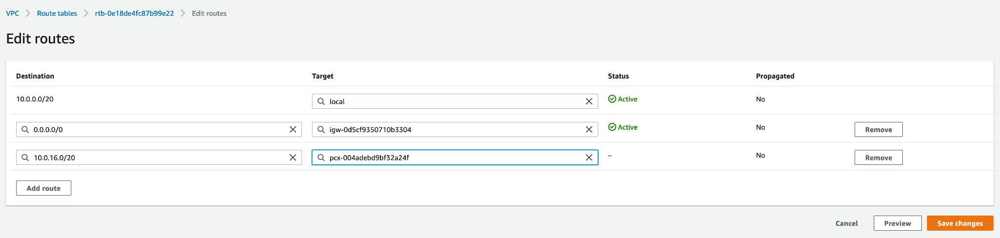
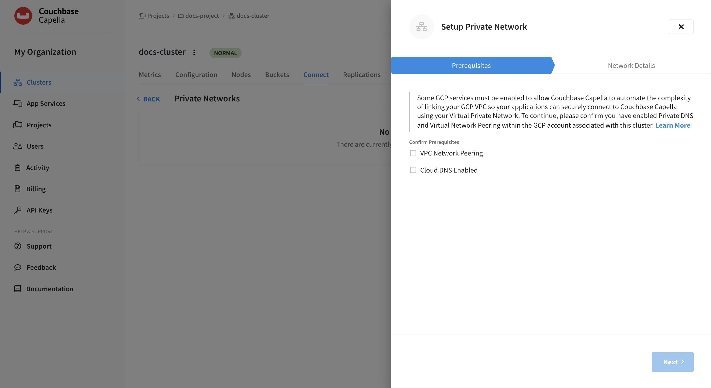
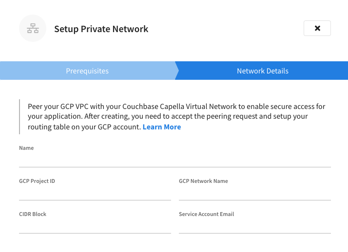

Configure a Private Network
Setting up a private network enables your application to interact with Couchbase Capella over a private connection by co-locating them through VPC or VNet peering.
Use the procedures on this page to configure a private network connection from Couchbase Capella clusters hosted with AWS or GCP to your application’s VPC.
Using a private network (also known as network peering) provides an added layer of security for organizations by avoiding communication over the Internet. It also results in a significant reduction in latency and egress costs.
| Capella does not support setting up a private network between different cloud providers. For example, you cannot set up private networking between a Capella cluster hosted in GCP with an application hosted on AWS. |
Setting up a Private Network
To set up a private network, use the instructions provided on the tab that corresponds with your Capella cluster’s cloud provider.
Prerequisites
To configure Couchbase Capella private networking with AWS, you need to complete the following prerequisites steps:
-
In AWS, enable DNS hostnames for the VPC:
 -
In AWS, enable DNS resolution for the VPC:
 -
You must also ensure that your Capella cluster’s CIDR block (specified when setting up the cluster) does not overlap with the application VPC CIDR block. You can retrieve the CIDR block for a cluster using the public API.
Creating a Private Network
-
In Capella, add a new private network for your cluster.
-
Open the cluster where you want to create the new private network.
-
Click the Connect tab.
This opens the Database Access page.
-
Inside the Virtual Network block, click Manage Private Networks.
-
Click Setup Private Network.
-
In the Setup Private Network fly-out menu, confirm the prerequisites and click Next.

-
-
In Capella, configure your private network details.
-
Fill out the Network Details fields.
You can find most of the required info for these fields on the page for your chosen VPC in AWS. - Name
-
Enter any name that you wish.
- AWS Account ID
-
The numeric AWS Account ID.
- Virtual Network ID
-
The alphanumeric VPC ID which starts with
vpc-. - Available Regions
-
The AWS region where your VPC is deployed (this can be seen in the top-right corner of the AWS console).
- CIDR Block
-
The AWS VPC CIDR block of network in which your application runs. This cannot overlap with your Capella CIDR Block.
If you have multiple CIDR blocks associated with a VPC you will need to set up multiple private networks, one for each CIDR block.
-
Click Link.
Capella will set up the private network. This typically takes up to a minute. If successful you should see the private network added to the list of private networks, then you may briefly see the cluster enter a "Deploying" state while the new network is set up.
If there’s a problem with the private network then Capella will tell you via an error message, such as in the case of overlapping CIDR blocks.

-
Finishing Private Network Setup
-
Once setup is complete, you will see the new network listed in the list of networks:
 -
While the status of the network says "Complete" there are a final few steps you need to carry out before you can access your Capella cluster from your VPC over this private network.
If you click on the Private Network it will show you two commands that you must run to accept the peering request and also link your VPC to the appropriate DNS server for hostname resolution. You can also accept the VPC peering request in the AWS console:
 -
However, you must associate the hosted zone via the AWS CLI command provided in Capella, as it is not currently possible to do this via the AWS console.
Upon executing these commands, you should see output similar to the following:
$ aws ec2 accept-vpc-peering-connection --region=us-west-2 --vpc-peering-connection-id=pcx-004adebd9bf32a24f{ "VpcPeeringConnection": { "AccepterVpcInfo": { "CidrBlock": "10.0.0.0/20", "CidrBlockSet": [ { "CidrBlock": "10.0.0.0/20" } ], "OwnerId": "264138468394", "PeeringOptions": { "AllowDnsResolutionFromRemoteVpc": false, "AllowEgressFromLocalClassicLinkToRemoteVpc": false, "AllowEgressFromLocalVpcToRemoteClassicLink": false }, "VpcId": "vpc-09af4fa45689ca44c", "Region": "us-west-2" }, "RequesterVpcInfo": { "CidrBlock": "10.0.16.0/20", "CidrBlockSet": [ { "CidrBlock": "10.0.16.0/20" } ], "OwnerId": "689827245340", "VpcId": "vpc-091c6caeba936ac48", "Region": "us-east-1" }, "Status": { "Code": "provisioning", "Message": "Provisioning" }, "Tags": [], "VpcPeeringConnectionId": "pcx-004adebd9bf32a24f" } }$ aws route53 associate-vpc-with-hosted-zone --hosted-zone-id=Z04089311NGVVH0FO3QGG --vpc=VPCId=vpc-09af4fa45689ca44c,VPCRegion=us-west-2 --region=us-east-1{ "ChangeInfo": { "Id": "/change/C0508746QOHOO1XX5BH5", "Status": "PENDING", "SubmittedAt": "2021-12-03T16:58:38.401Z", "Comment": "" } } -
The final step is to then update the Route Table for your application VPC to ensure that all traffic destined for your Capella cluster is appropriately routed.
First, identify the Route Table for your application VPC:

-
Then you want to edit the routes of this Route Table to add the Capella cluster as a new route. Take the CIDR block of the
RequesterVpcInfofrom the VPC peering request output, in this example10.0.16.0/20, and enter this as the destination. The target should be theVpcPeeringConnectionId, in this examplepcx-004adebd9bf32a24f. -
If your VPC has any outbound security groups associated with it (i.e. limiting outbound traffic to specific IPs), then you must also add the CIDR block for your Capella cluster to the outbound security group.
Prerequisites
To configure Couchbase Capella private networking with GCP, you need a service account with these roles:
-
DNS Administrator (
roles/dns.admin) -
Compute Network Admin (
roles/compute.networkAdmin)
Creating a Private Network
-
In Capella, add a new private network for your cluster.
-
Open the cluster where you want to create the new private network.
-
Click the Connect tab.
This opens the Database Access page.
-
Inside the Virtual Network block, click Manage Private Networks.
-
Click Setup Private Network.
-
In the Setup Private Network fly-out menu, confirm the prerequisites and click Next.

-
-
In Capella, configure your private network details.
-
Fill out the Network Details fields.
You can find most of the required info for these fields on the page for your chosen VPC in GCP. - Name
-
Enter a descriptive name for the new private network.
- GCP Project ID
-
The unique identifier for your GCP project. This is typically autogenerated in the form of
rock-galaxy-123456or similar. - GCP Network Name
-
The GCP VPC network name.
- CIDR Block
-
The GCP VPC CIDR block of network in which your application runs. This cannot overlap with your Capella CIDR Block.
- Service Account Email
-
The email address of the associated service account. This looks like
<service-account-id>@rock-galaxy-123456.iam.gserviceaccount.com.
-
Click Link.
Capella will set up the private network. This typically takes up to a minute. If successful you should see the private network added to the list of private networks, then you may briefly see the cluster enter a "Deploying" state while the new network is set up.
If there’s a problem with the private network then Capella will tell you via an error message.
-
Finishing Private Network Setup
Once setup is complete, you will see the new network listed in the list of networks.
| While the status of the network says "Complete" there are some final steps you must carry out before you can access your Capella cluster from your VPC over this private network. |
-
On the Private Networks screen, click the listing for the new Private Network.
This shows you two commands that you must run to accept the peering request and also link your VPC to the appropriate DNS server for hostname resolution. For example:
$ gcloud compute networks peerings create <your-peer-name> --network=<your-vpc-network-name> --peer-project <your-gcp-project-id> --peer-network <capella-vpc-network-name>$ gcloud dns managed-zones create <your-zone-name> --description="Peering Zone to Capella" --dns-name=<dns-name-suffix> --account=<service-account-email-address> --networks=<your-vpc-network-name> --target-network=<your-vpc-network-name> --target-project=<your-gcp-project-id> --visibility=private -
Using the gcloud CLI, run the commands provided by Capella.
-
Verify connectively to ensure that the applications connecting from the application VPC are using the private network correctly.
Verifying Connectivity to Private Networks
With a private network set up, it’s important to ensure that applications connecting from the application VPC are using the private network correctly.
Hostname Resolution
-
The first step whenever an application connects to a Capella cluster is to resolve the hostnames of all nodes in the cluster. Within the Capella UI, you can see the URL for the cluster, which is an SRV record containing multiple nodes of the cluster.
You can retrieve the DNS SRV record for your cluster within the Wide Area Network section of the Connect tab. This hostname can be resolved using a command such as the following:
nslookup -type=SRV _couchbases._tcp.cb.a-lxzt-gdkzoqfuu.cloud.couchbase.comServer: 127.0.0.53 Address: 127.0.0.53#53 Non-authoritative answer: _couchbases._tcp.cb.a-lxzt-gdkzoqfuu.cloud.couchbase.com service = 0 0 11207 9qvj8x-f2oxhahtz.a-lxzt-gdkzoqfuu.cloud.couchbase.com. _couchbases._tcp.cb.a-lxzt-gdkzoqfuu.cloud.couchbase.com service = 0 0 11207 jkzlapnfpklgjhtl.a-lxzt-gdkzoqfuu.cloud.couchbase.com. _couchbases._tcp.cb.a-lxzt-gdkzoqfuu.cloud.couchbase.com service = 0 0 11207 4ncgebm6lmtbxmkr.a-lxzt-gdkzoqfuu.cloud.couchbase.com. -
You should then resolve one of these individual hostnames returned from the SRV record, for example:
nslookup 9qvj8x-f2oxhahtz.a-lxzt-gdkzoqfuu.cloud.couchbase.comServer: 127.0.0.53 Address: 127.0.0.53#53 Non-authoritative answer: Name: 9qvj8x-f2oxhahtz.a-lxzt-gdkzoqfuu.cloud.couchbase.com Address: 10.0.18.110 -
If the DNS resolution is working correctly then you should see the private IP of the Capella Node (i.e. an IP from the cluster’s CIDR block). If you see that the public IP is returned for this node then you should validate that you have:
-
Enabled DNS resolution
-
Enabled DNS hostnames
-
Associated the hosted zone with your VPC
See the Prerequisites section, above.
-
Network Connectivity
Now that you have validated that DNS resolution is working correctly, you should validate the network connectivity between your application instances and your Capella cluster.
-
To validate that the routing is correctly set up for your VPC, you can run a
tracerouteto one of the nodes in your cluster (retrieved from the previous DNS resolution step). For example:traceroute -T 9qvj8x-f2oxhahtz.a-lxzt-gdkzoqfuu.cloud.couchbase.com -p 18091traceroute to 9qvj8x-f2oxhahtz.a-lxzt-gdkzoqfuu.cloud.couchbase.com (10.0.18.110), 30 hops max, 60 byte packets 1 ip-10-0-18-110.us-west-2.compute.internal (10.0.18.110) 0.303 ms 0.288 ms 0.302 ms -
This command should return quickly, if not then there are likely issues with your routing and you should validate the route table associated with the VPC to ensure that you have associated the correct CIDR block with the peering connection.
-
Finally, you can run a curl command to validate that Couchbase Server is responding correctly over the private network:
$ curl -k https://9qvj8x-f2oxhahtz.a-lxzt-gdkzoqfuu.cloud.couchbase.com:18091<!DOCTYPE HTML PUBLIC "-//IETF//DTD HTML 2.0//EN"><html><head><title>301 Moved Permanently</title></head><body><h1>Moved Permanently</h1><p>The document has moved <a href="https://9qvj8x-f2oxhahtz.a-lxzt-gdkzoqfuu.cloud.couchbase.com:18091/ui/index.html>here</a>.</p></body></html>
Troubleshoot Private Network Issues
Check the Status of Your Private Network Connection
The following table provides information about the status
| Status | Description |
|---|---|
Not Setup (Default state) |
No networks exist and no infrastructure has been provisioned. |
Linking Network |
One or more networks are being connected and/or the infrastructure is being provisioned. |
Linking Failed |
One or more networks have failed to connect but the infrastructure was provisioned successfully. |
Infrastructure Failed |
Infrastructure provisioning failed. |
Ready |
One or more networks are linked successfully. |
No Networks |
No networks are linked but the infrastructure has been provisioned for your cluster. |
Infrastructure Provisioning |
The infrastructure is being provisioned. Note that this is an intermediate state that is only possible for the first network linked for a cluster. |
If you create multiple networks in rapid succession, both the Linking and Provisioning states may be displayed as Failed at the same time.
|
Possible Errors and Workarounds
-
You can set up private networks on a new deployment only after the private networking feature is enabled. Check if you are using an existing cluster and/or if the feature is enabled.
-
If the private networking feature does not exist in your region, the private zone creation can fail. Check that the feature is enabled in your region.
-
Policy added for the private zone could fail. Retry adding the policy to resolve the issue.
-
Security group update for the CIDR may fail. Retry the operation to resolve the issue.
-
If you provided an incorrect CIDR block, application VPC, VPC ID, or Regions when creating a private network, we recommend that you delete that private network and re-create a new one with the correct values.
-
Ensure that both DNS settings are enabled on the AWS VPC side — DNS hostname and DNS resolution. If changing this setting, allow time for DNS caching.
-
While we support multiple subscriptions within a single Azure tenant, VNet peering across two or more Azure tenants is not supported.
-
If using Couchbase Go SDK Version 1.6 with private networking, ensure that you set
network=defaultin the connection string.
| Tools such as the AWS VPC Reachability Analyzer can be useful to verify communications. |